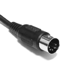
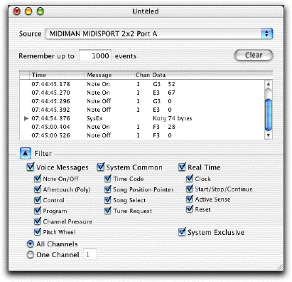
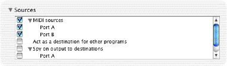
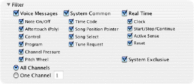

|

MIDI Monitor Documentation |
||
|
MIDI Monitor is a utility for Mac OS X which displays MIDI signals in a variety of formats. It can watch both incoming and outgoing MIDI streams, and can filter them by message type and channel. Musicians will find it handy for tracking down confusing MIDI problems, and programmers can use it to test MIDI drivers and applications. MIDI Monitor is FREE to download and use. The source code is available as Open Source (under the BSD license). Please note that MIDI Monitor requires an Intel Mac with OS X 10.5 or later. The MIDI Monitor web page can be found at this URL:
Parts of the window  When you launch MIDI Monitor, it will automatically open a new document. The window shows you the MIDI events that MIDI Monitor receives. There are also two sections, Sources and Filter, which start out hidden; click the gray arrows to expand them. MIDI Monitor uses the standard Mac interface for dealing with documents; just open, close, and save as usual. A MIDI Monitor document saves its settings and the MIDI events which it is displaying.
Events The main part of the window is a list of events that MIDI Monitor has received, in chronological order. The columns are as follows: Time: When the event was received by the computer
You can clear the list of events by pressing the Clear button, using the Events>Clear Events menu command, or typing Command-K. You can also change the number of events that the list will remember by changing the number in the text field. Some kinds of events contain more data than can be shown in one line. These are System Exclusive (or SysEx) events and Invalid events. To show the full contents of the event, double-click it, or use the Events->Show Detailed Data menu command. (More on that later.) Sources  This section lets you choose the sources of MIDI events that this window listens to. The sources come in three categories:
Filter  MIDI Monitor also provides a filter, so you can see only the events you are interested in. New windows start with all of the checkboxes checked, meaning that all messages are displayed. The large checkboxes control the filters for a whole category of messages; the small checkboxes each control the filter for one specific type of message. For "voice" messages, which include a channel number, you can also choose whether to listen to all channels or just one.
The preferences window lets you change the way that MIDI Monitor displays values, as well as some other behavior. Changes in this window take effect immediately, and are automatically saved.
Time format: The method of displaying the timestamps of events.
Note format: The method of displaying the musical note associated with note-on and note-off events.
Controller format: The method of displaying the name or number of control events.
Data format: The method of displaying any other data in events.
Expert Mode: Changes the display slightly. Intended for experts only.
New windows will use these sources: When new windows are created, all of the sources in each of the checked categories will be selected. Automatically open windows for new sources: If this checkbox is checked, when new sources become available, MIDI Monitor will open a new window which listens to the new sources.
Save SysEx: This option lets you control how SysEx messages are saved to files. SysEx messages should always end with an EOX byte (hexadecimal F7). However, some devices do not follow this rule.
Ask to save when a changed window is closed: When checked, MIDI Monitor will ask you to save a modified window when you close it, which is the standard Mac behavior. If you don't tend to save MIDI Monitor documents, this can get annoying, so uncheck this preference to turn off the warning. Automatically check for updates: When checked, MIDI Monitor will periodically check if a newer version is available.
To see the contents of a SysEx event, double-click it, or select it and use the Events->Show Detailed Data menu command. The window shows information about the event, as well as a dump of the event's data in both hexadecimal and ASCII formats. Also, you may save the event data to a file using the "Save As" button.
When MIDI Monitor receives data that does not conform to the MIDI specification, it shows the data in an Invalid event. To see the contents of the event, double-click it, or select it and use the Events->Show Detailed Data menu command.
You can use the menu command "Rescan MIDI", in the "Special" menu, to reinitialize the entire MIDI system and look for available devices. Generally you shouldn't need to do this, but I've included it as a convenience. The Audio MIDI Setup application has a "Rescan MIDI" button that does exactly the same thing. (Developers: the menu command just calls CoreMIDI's MIDIRestart() function.) If nothing is listed under MIDI Sources in the Sources section, then there are no MIDI devices available. You must have Mac OS X drivers for your devices; Mac OS 9 drivers will not work. Please check with the manufacturer of your device for drivers.
Please send questions or comments to: MIDIMonitor@snoize.com
MIDI Monitor is copyright © 2001-2012 by Kurt Revis. All rights reserved. Thanks to the folks on the CoreAudio-API mailing list for all the help they have provided, and to everyone who has sent in bug reports and feature requests.
| ||